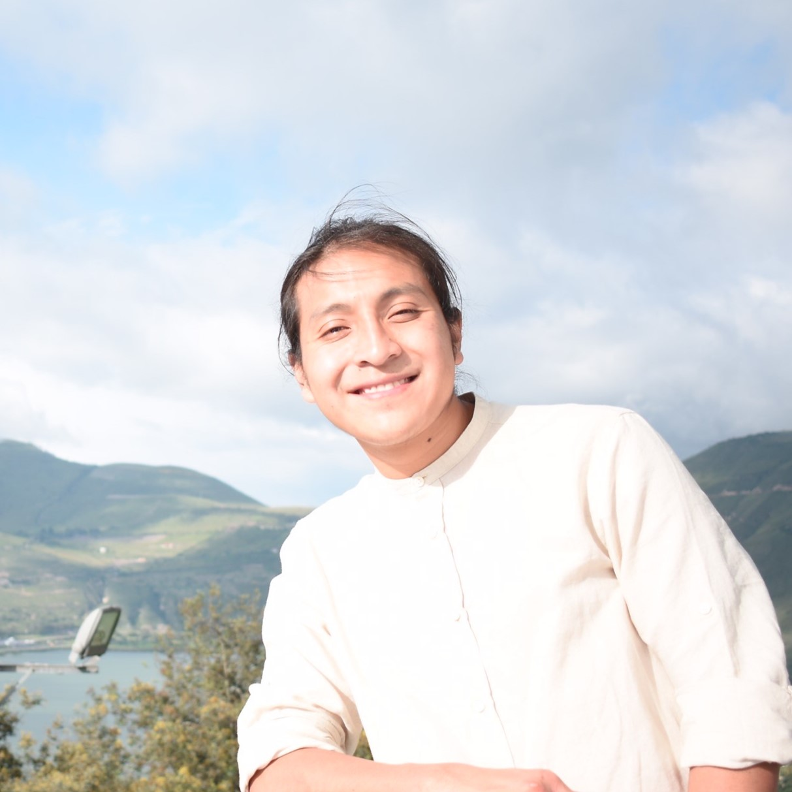

Nuestro Equipo
Information about the team behind this website.

Ghaitai Males
Estudiante de Artes Liberales con subespecialización en Educación y Lingüística. Interesado/a en fortalecer la educación intercultural, especialmente en comunidades indígenas. Aspiro a crear puentes entre la academia y el conocimiento ancestral, y me motiva contribuir al fortalecimiento del idioma quichua en contextos educativos.